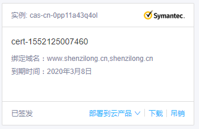

https与koa
node 使用 koa 搭建 https 网站
pubdate: 2019-03-09 18:17:32
tags : 服务器，https，网站建设，koa
 扎心
扎心看着这个标识有点碍眼于是决定搭建一个 https 的站点来练练手
ssl 证书
这个很容易，去阿里云申请一个免费的 ssl 证书

然后下载下来。得到了一个 key 文件和一个 pem 文件。
创建 https 服务器
这一步也十分简单读取 key 文件和 pem 文件构造出指定键名的对象然后用 https 模块创建 server 传入 options 和 koa 的处理函数
javascript
const options = {
key: fs.readFileSync(path.resolve(__dirname,config.sslDir.key)),
cert: fs.readFileSync(path.resolve(__dirname,config.sslDir.pem))
};
http.createServer(app.callback()).listen(80);
https.createServer(options,app.callback()).listen(443);
就大功告成了。